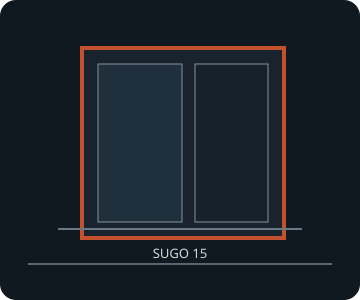

[ SUGO 15 // ALUMINUM MINI-ITX CUBE ]
SilverStone SUGO 15 (SG15)
247 × 211 × 366 mm (W × H × D), 19.07 L; Mini-DTX/Mini-ITX, full-length triple-slot graphics and ATX PSU support in a compact aluminum chassis.

FITMENT CAVEAT: This record describes the named model only. Published maxima can depend on revision, brackets, fan/radiator position, PSU cable routing and drive configuration; verify the exact manual and parts before purchase or assembly.
Specifications & fit
| Exact model | SilverStone SUGO 15 (SG15) |
|---|---|
| Motherboard sizes | Mini-ITX (170 × 170 mm) and Mini-DTX (203 × 170 mm); check board headers and cable exits against the side radiator bracket. |
| PSU type and fit | Standard ATX/PS2, up to 150 mm long. Modular short-depth units simplify cabling; PSU cables compete with the GPU and drive positions. |
| GPU length and thickness | Up to 330 mm long × 148 mm high × 65 mm thick; three expansion slots. Check power-plug bend room and side-radiator configuration. |
| CPU cooler height | Up to 182 mm tall only with the top fan removed; a top fan reduces the usable tower-cooler envelope. AIO pump/block limit is 55 mm. |
| Radiator and fan options | Rear: one 120 or 140 mm fan (one 120 mm fan included) or 120 mm radiator. Side: two 120/140 mm fans or 120/240 mm radiator. The 240 mm side radiator is limited to 55 mm combined radiator/fan stack; consult the manual for simultaneous GPU, pump and drive combinations. |
| Storage clearances | Up to two 3.5-inch and three 2.5-inch drives in the air-cooled/rear-120 mm layouts. A side 240 mm radiator removes the 3.5-inch drive capacity; mixed radiator layouts reduce the 3.5-inch count. Verify cage position against GPU length. |
| Compatibility notes | Published GPU, radiator, drive and cooler maxima are configuration-dependent, not cumulative. A 330 mm triple-slot card and side radiator cannot be assumed to coexist; measure the exact card, radiator stack, PSU cables and drive brackets. |
Compatibility & preservation notes
Published GPU, radiator, drive and cooler maxima are configuration-dependent, not cumulative. A 330 mm triple-slot card and side radiator cannot be assumed to coexist; measure the exact card, radiator stack, PSU cables and drive brackets.
- Record the case model/SKU, revision, included riser, brackets and manual version before changing hardware.
- Measure the actual GPU shroud, power connectors, cooler, radiator/fan stack and cable bend radii; do not assume listed maxima can coexist.
- Keep original drive trays, standoffs, fasteners, fan brackets and panel hardware with the enclosure.
Manufacturer sources
- SilverStone — SUGO 15 product specificationsManufacturer fit tables and product options for the SUGO 15.
- SilverStone — SUGO 15 manual (PDF)Manufacturer assembly diagrams, radiator/drive configurations and component clearance notes.
Sources are manufacturer product documentation and the model-specific manual; consult the matching revision for assembly dimensions.